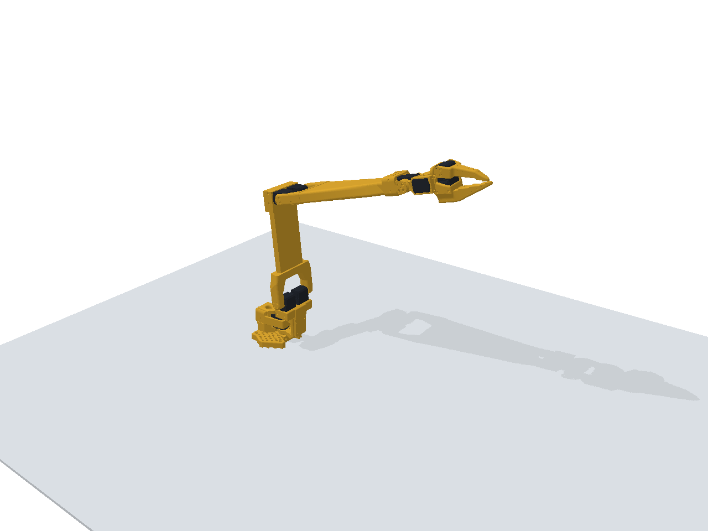
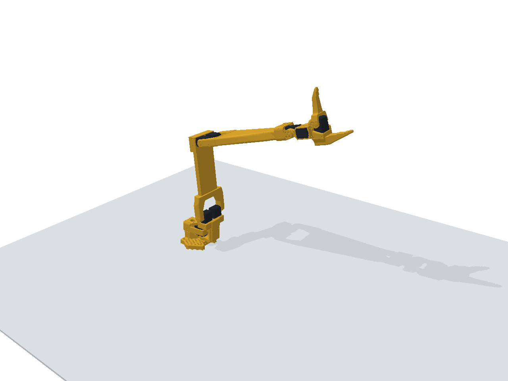

CAD 验证、MuJoCo、PyBullet：通过
PingTi v4 new_calib URDF · 加强肘连杆版
在本地 Fusion 360 中，将原版 v4 总成导入独立临时文档，读取原生组件、关节轴、限位及物性，导出 16 个以米为单位的网格。随后重新建立零位坐标变换，并使用 Fusion 求解器产生的姿态做独立对照。基线 F3D 的原始字节保留在 Git 提交 491f3da 中，旧 v3 URDF 未修改。
以上为基线来源；当前版本保留这套运动链，并使用 15 个原生组件网格和 1 个用户指定的原长度加强 STL。
打开新 URDF · 建模来源与参数 · CAD 验证明细 · MuJoCo 结果 · PyBullet 结果
72 组Fusion 独立姿态
5 + 1机械臂关节 + 夹爪关节
0.988 kgSO 参考假设下的总质量

五个机械臂关节均为零；夹爪命令 0，模型夹爪角度 0。
机械臂仍处于零位；夹爪命令 100，模型夹爪角度 102°。本版更新：原长度加强肘→腕连杆
打印用 stl_3d_printing/elbow_link.stl 已原位替换为全长度加强件；仿真网格同步替换 meshes/component_00.stl。源 STL 为毫米，仿真网格为米；局部坐标和外形尺寸与原连杆匹配，没有使用 Fusion v3 中短 40 mm 的对象。
外形约 284.700 × 24.000 × 102.122 mm；新网格体积 346.388 cm³。按相同有效密度，连杆质量 97.750 → 200.810 g，整臂 0.885035 → 0.988096 kg。质心和完整惯性张量重新通过封闭 STL 的体积积分计算。
与基线 491f3da 比较，所有关节的 parent/child、origin、axis、limit 和 dynamics 完全一致，其他连杆定义也一致。新网格检查为封闭、面朝向一致且无退化三角形。基线 CAD、URDF 和原网格从该 Git 提交读取，不依赖备份文件；来源选择记录在 geometry_overrides.json。
此版本继承原模型的关节行程；保持行程设定不等于证明加强筋不会改变实际干涉或机械止挡，后续需要检查这部分。
加强件 Fusion 总成
仓库 fusion/PingTi_Arm_5DOF_v4.f3d 已替换为原生加强件总成。加强件取自 Fusion 独立文件 shoulder_to_elbow_link 的历史 v2，组件 elbow_link 中可见的 Body1，直接复制原生 BRep；没有导入或转换 STL。加强件保留 310 个原生曲面，替代上一次总成中 25,463 个分面；其余 15 个组件几何保留。
原始总成可从 Git 提交 491f3da 恢复，备份与中间总成只保留在本地。完整原生设计保存为 fusion/parts/shoulder_to_elbow_link_v2_native_source.f3d，保留其原始 13 项时间线；总成中的加强件为原生基础实体副本，不关联云端文件。源文件中隐藏的内部实体 Body3 未装入总成。
原生加强件约 284.700 mm 长，两端检查的 72 处圆柱接口与原总成匹配。与指定打印 STL 双向表面采样比较，最大偏差约 0.093 mm；原生体积 346.483760 cm³，STL 体积 346.388416 cm³，相差 0.027525%。原生几何比对记录。URDF 保持现有打印 STL、质量和惯性参数。
总成包含 16 个组件、18 个实体、15 个按原装配位置重建的 As-built 连接，以及 6 个运动关节；底座固定于原位置。保留 CAD 角度的零点、方向和限位，导出前及重新导入后各通过 72 组实际 Fusion 姿态对照，所有关节健康状态均为正常。
原 Fusion 材料标记仍为 Steel，因此 F3D 内显示的质量不代表实物；URDF 继续采用上面约定的 SO ARM 有效密度和舵机质量。该验证覆盖装配及运动学，不包含加强件干涉、碰撞或真机测试。
总成来源与哈希 · 总成重开验证记录。F3D 单独保存在仓库中，不包含于 URDF ZIP。
新总成 SHA-256：50d94271b40023488d1a8815abd2c2aa38b2b31ced057fcc089b26a51457dd0a
零位与方向
底座、肩、肘、腕俯仰采用 CAD 名义行程中点。腕滚转沿用 SO ARM 参考姿态：以本地 so101_new_calib.urdf 为具体参考，匹配腕俯仰正轴到夹爪铰链正轴、绕腕滚转正轴的有向夹角 177.210870°。这会得到 PingTi 自身 CAD 中约 92.789130° 的腕角，不能把它当作真机额外补偿值。
| LeRobot / URDF 关节 | CAD 零位角度 | CAD→URDF 正方向 | URDF 行程 |
|---|
| elbow_flex | 10.000000° | -1 | -100.000° ～ 100.000° |
| wrist_flex | 0.000000° | -1 | -110.000° ～ 110.000° |
| wrist_roll | 92.789130° | -1 | -180.000° ～ 180.000° |
| gripper | -12.000000° | +1 | 0.000° ～ 102.000° |
| shoulder_pan | 0.000000° | +1 | -110.000° ～ 110.000° |
| shoulder_lift | -5.000000° | +1 | -105.000° ～ 105.000° |
表中的 CAD 角度和方向只用于从 CAD 构建 URDF。LeRobot 的五个机械臂角度输入本模型时只需度→弧度，不应再次应用表中的符号或偏移。正方向采用 SO new_calib 的名义约定：三个俯仰关节正轴平行，腕滚转正轴朝向前臂。
Fusion 对此文档中驱动关节的数值舍入至 0.1°。腕部参考姿态从实际导出的 92.8° 沿已知转轴、枢轴解析修正 -0.010870101°，以保留 SO 参考角；没有对验证姿态逐个拟合。
质量、质心与惯性
采用用户指定的共同材料／有效密度与舵机同质量假设。SO 参考文件没有独立给出打印密度和舵机质量，因此选择两个可分离的组件推算，而非复制整条 SO 连杆的质量或惯性：
- SO 无舵机活动夹爪质量 12 g ÷ 其网格体积，得到有效打印密度 579.725 kg/m³。
- SO 固定夹爪连杆总质量 87 g，减去同一密度下打印件质量，得到单颗舵机参考质量 54.165 g。
- 除加强件采用封闭 STL 体积外，其他 PingTi 打印件按自己的 CAD 实体体积计算质量；8 颗舵机均采用上述质量，包含两颗 STS3250 的明确近似。
- 原生组件物性按新质量缩放，加强件物性通过 STL 体积积分计算，均变换到对应连杆坐标。全部实体惯性为正定，满足惯性三角不等式。
这是有效密度近似，不是实心耗材密度，也不等于已知填充率。质心及惯性按均匀等效密度建模，未识别打印壳层、内部填充或舵机内部零件的实际质量分布。SO 参考 commit：608122e9ac330a753735f2e18aee73338e9ac407；引用文件、哈希和计算公式保存在 manifest，参考副本附带原许可证。
| 连杆 | 类别 | 估算质量 g | 网格 / CAD 体积差 |
|---|
| elbow_link | 打印件 | 200.810 | STL 体积积分；不与旧 CAD 比较 |
| sts3215_shoulder_pitch_2 | 舵机 | 54.165 | 0.0075% |
| sts3215_shoulder_pitch_1 | 舵机 | 54.165 | 0.0075% |
| sts3215_base_yaw | 舵机 | 54.165 | 0.0075% |
| wrist_link | 打印件 | 17.666 | 0.0041% |
| gripper_mount | 打印件 | 33.010 | 0.0163% |
| sts3215_wrist_roll | 舵机 | 54.165 | 0.0075% |
| base_link | 打印件 | 85.716 | 0.0117% |
| moving_gripper | 打印件 | 11.719 | 0.0147% |
| sts3215_elbow_pitch_2 | 舵机 | 54.165 | 0.0075% |
| sts3215_elbow_pitch_1 | 舵机 | 54.165 | 0.0075% |
| sts3215_wrist_pitch | 舵机 | 54.165 | 0.0075% |
| sts3215_gripper | 舵机 | 54.165 | 0.0075% |
| wrist_mount_link | 打印件 | 8.015 | 0.0539% |
| base_yaw_link | 打印件 | 59.385 | 0.0144% |
| shoulder_link | 打印件 | 138.456 | 0.0291% |
验证结果与可解释范围
- 原生 CAD 关节图：16 个实体组件、15 个连接；新模型加一个质量为 0 的输出端参考 frame。
- 72 组原始 Fusion 运动链姿态包含机械端点、逐关节扰动、48 组随机组合和腕部参考姿态。逐组件核对完整刚体变换；自写 FK 最大参考点误差 8.46e-11 mm，属于数值一致性结果。
- MuJoCo 3.2.5 独立导入与 72 组 FK 对照通过；系统质量矩阵在全部样本中正定，最小特征值 1.28144e-05。
- PyBullet 独立导入与 72 组 FK 对照通过；最大参考点误差 0.000139 mm。单精度返回值造成的差异不代表实物精度。
- 其余 15 个原生组件网格与 CAD 的最大体积相对差 0.0539%，最大质心差 0.0284 mm；加强件单独通过闭合性、面朝向和惯性检查。
- CPU 渲染已检查零位、侧视和夹爪开合。归档的原版 F3D 与原 v3 URDF 的 SHA-256 均与导出前一致。
这些结果确认模型与 CAD 的一致性，不是毫米级真机精度证明。 尚未实测电机正方向、校准端点、腕部参考摆姿、夹爪开合和实际 TCP。CAD 端点样本仅用于 FK 验证，不代表碰撞可行姿态。网格在物理引擎中可能被凸化；未验证接触任务、抓取、控制器增益或真实负载。
在 LeRobot / 仿真中使用
URDF 与 meshes/ 保持相对路径，可以整目录搬运。PingTi 配置需使用 use_degrees=True。五个机械臂关节按度转弧度；夹爪 0～100 映射到 0～102°。转换函数位于 joint_mapping.py，不会连接或控制机械臂。
from joint_mapping import lerobot_to_urdf
q_rad = lerobot_to_urdf(robot_observation)
# q_rad keys: shoulder_pan, shoulder_lift, elbow_flex,
# wrist_flex, wrist_roll, gripper
肩、肘两组镜像舵机各对应一个机械关节，URDF 不增加独立 secondary 自由度。tool_mount_link 位于腕滚转输出轴原点，可作为后续附加实测 TCP 的基准；它不是指尖抓取中心。
位置规划参数暂设 velocity=1 rad/s；单舵机 effort=3.35 Nm，双舵机关节 6.70 Nm，阻尼与摩擦参考 SO 模型。这些是近似模型参数，既不是实测 PingTi 性能，也不由 URDF 自动约束真实驱动器。
复现
Fusion 导出脚本位于仓库 Simulation/validation/urdf_audit_20261019/FusionNewCalib/。其导出来源与完整姿态保存在 fusion_export.json。在安装相应 Python 包的环境中运行：
python build_model.py # NumPy + SciPy；读取本地 SO-ARM100 参考模型
python verify_mujoco.py # MuJoCo + NumPy
python verify_pybullet.py # PyBullet + NumPy；同时输出渲染图
python make_report.py
python package_model.py # MuJoCo；打包并验证异地解压加载
文件校验
新 URDF
0f399d8c9d8b7465b43741d15f5709532586af64ed2def64ce6b65cd6efe3aca
保留的 v3 URDF
fdb1781047c65f24d7d44042dd886784317775a60b9606de11121d5bd7e92c85
源 F3D
d593c01c38da6e048790d1c9c18e48add82de338029c5f8759322417adfaf582
几何来源：PingTi-Arm；零位与质量参考：TheRobotStudio/SO-ARM100。基线导出于 2026-10-19；当前加强件的来源选择和文件哈希见 manifest。